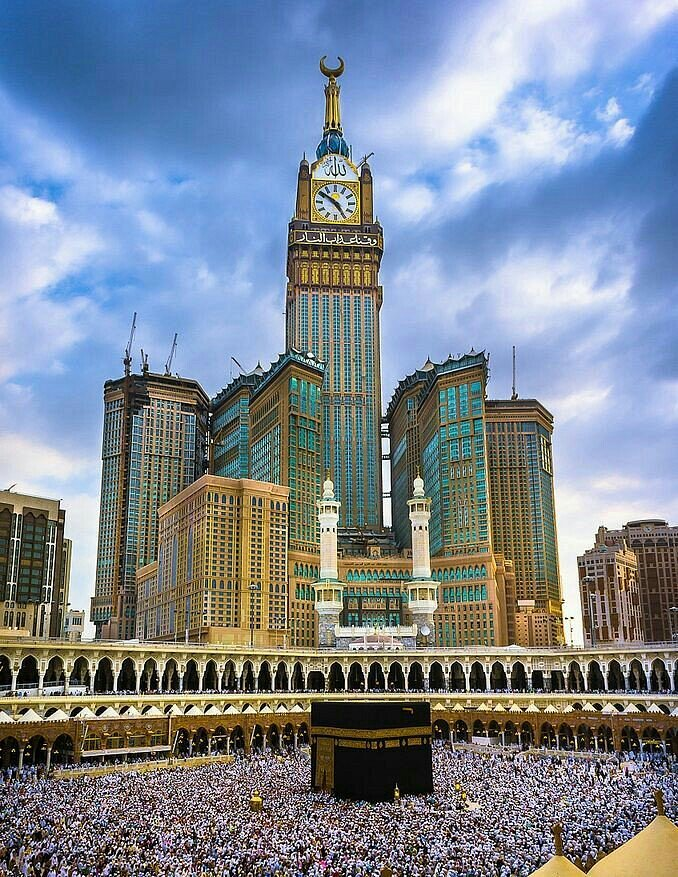
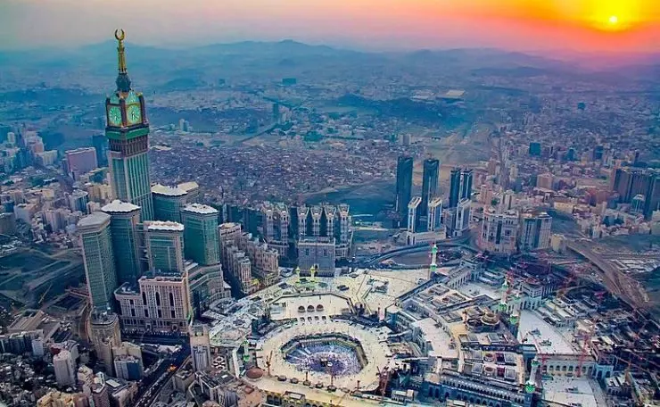

Trip to Saudi Arabia |
 |
Spritual Awekening Journey to Makkah Al-Mukarramah
The most beloved land to Allah Almighty and His Messenger (ﷺ)
Here we come, O Allah, here we come!
Birthplace of Prophet Muhammad (ﷺ)
Makkah is the blessed land and the birthplace of Prophet Muhammad PBUH, it is the land that the Quran was first revealed to and an amazing place to visit once-in-a-lifetime

Index / What you need to know:
Best time to visit Saudi Arabia
Visa for Saudi Arabia
Flight Dates
Acoommodation
Transportation
Things To do in Makkah
Things To do in Madina
Budget
When’s the best time to visit Saudi Arabia?
The best time to visit Saudi Arabia is winter, between October and March. Temperatures are at their most pleasant between November and February
Visas for Saudi Arabia
The Saudi Embassy requires all visitors to obtain a visa unless they come from one of the visa exempt countries. Some visitors are eligible to obtain a visa online or on arrival. For more detailed and up-to-date information on visa eligibility please refer to: Official Saudi Arabia Website
Flight Dates
| Outbound: Mon, 6 Dec 2021 |
16:00 - LHR London Heathrow 04:25+1 - MED Madinah |
| Return: Sun, 19 Dec 2021 | 12:25 - JED Jeddah 16:05 - LHR London Heathrow |
Accomodation
Madina
| Mon, 6 - 12 Dec 2021 | Al Hayatt Plus Hotel | ⭐️⭐️⭐️⭐️⭐️ |
Makkah
| Sun, 12 - 19 Dec 2021 | Snood Al Salam Hotel | ⭐️⭐️⭐️⭐️⭐️ |

Transportation
Medina to Makkah: |
|
Makkah to Jeddah: |
|
Things To do in Madina
| Must Visit or explore: |
|
Things To do in Makkah
| Must Visit or explore: |
|
Budget
Items |
Total Cost |
Per person |
| Visa | £540 | £90 |
| Flight | £3360 | £560 |
| Accomodation | £671 (395+276) | £112 |
| Bus ticket | £85 | £14 |
| Train Ticket (Optional) | £168 (+39) | £28 |
| Total | £4824 | £804 |
The calculations are based on the following:
12 Nights in total.
5 nights in Madina and 7 nights in Makkah.
1 flight from LHR, Bus or Train from Madina to Makkah and same options to Jeddah on last day of the trip.
6 guys.
This is the best price I could get for now, but it could get cheaper Insha'Allah.